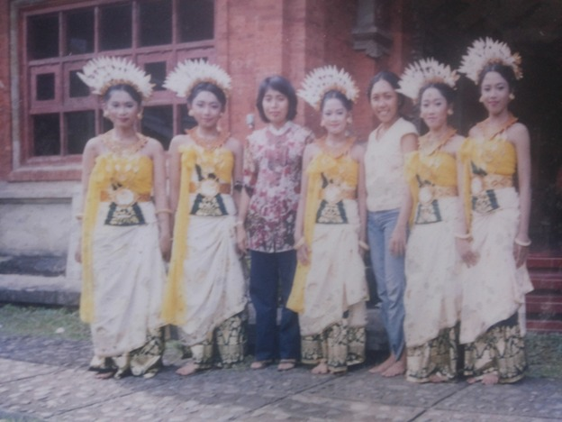

Penjelasan umum
Keindahan, keunikan, dan ragam manfaat yang dimiliki oleh bunga Jempiring telah menarik simpati seorang Bintang Puspayoga untuk menjadikannya maskot kota Denpasar. Atas gagasannya pula maka diciptakanlah tari penyambutan yang terinspirasi dari karakter bunga Jempiring dengan judul tari Sekar Jempiring. Tarian ini mengadaptasi karakter gerak pegambuhan khususnya karakter putri/galuh dipadukan dengan karakter tabuh kreasi kakebyaran. Perpaduan tersebut bertujuan melahirkan karakter agung, lembut dan juga dinamis sesuai imajinasi penggagas maupun penata dalam menginterpretasikan karakter bunga jempiring sebagai maskot kota Denpasar.
Penggagas: Ibu Bintang Puspayoga
Penata tari: Ida Ayu Wayan Arya Satyani, 5h5.Sn., M.Sn
Penata karawitan: I Ketut Suandita, S.Sn
Penata Busana: Anak Agung Ngurah Anom Mayun Konta Tanaya
Produser: Pemkot Denpasar dan Tim Penggerak PKK Kota Denpasar
Latar belakang penciptaan:
Tari Sekar Jempiring diciptakan atas keinginan Bintang Puspayoga yang saat itu menjabat sebagai ketua tim penggerak PKK Kota Denpasar, sebagai kado kenangan bagi masyarakat Denpasar di akhir masa tugasnya pada tahun 2004. Dengan melibatkan para seniman Kota Denpasar maka terciptalah tari penyambutan yang mulanya ditujukan sebagai penyambutan tamu-tamu di setiap acara-acara resmi Pemerintah Kota Denpasar.
Proses kreatif (tempat dan tahun penciptaan):
Proses penataan tari mengambil tempat di sanggar Bajra Sandhi, Denpasar Barat. Penataan tari dilakukan pada bulan Desember dengan waktu efektif dua minggu sebelum pembinaan, perbaikan kemudian launching dan sosialisasi. Proses penataan musik dilakukan di Br. Kehen, Kesiman, Denpasar Timur.
Faktor kesulitan: mempertemukan konsep ngutang igel dalam koreografi dengan komposisi musik yang memang sudah digarap/ada lebih dulu. Dalam kurun waktu Desember menuju Februari, bulan di mana tarian Sekar Jempiring hendak dipentaskan perdana di depan publik dalam peringatan ulang tahun kota Denpasar, 27 Februari 2005, terjadi proses sebagai berikut:
Pembinaan (memperlihatkan kepada seniman/ pinisepuh kota Denpasar) bertempat di Br. Kehen, Kesiman. (Tanggal pastinya saya lupa, kemungkinan masih di bulan Desember). Saat itu hadir Ibu Jero Puspa, Ibu Ni Ketut Alit Arini, Ibu Ni Ketut Yuliasih, Ibu Anak Agung Susilawati, Bapak I Nyoman Suarsa. Pada kesempatan tersebut, tim menyarankan penyederhanaan (penghilangan gerak nglayak) dan perubahan di bagian pakaad (penghilangan adegan penyerahan ungkapan selamat datang atau cindramata) dengan alasan untuk mempermudah sebarannya nanti, namun secara konseptual menyangkut karakter gerak tidak terjadi perubahan.
Proses penataan kostum: penggagas maupun penata mendatangi penata busana untuk mengutarakan konsep koreografi dan berdiskusi mengenai kemungkinan kaitan gerak dengan efek kostum yang diinginkan. Saat itu penata busana, Anak Agung Ngurah Anom Mayun Konta Tanaya mengutarakan keinginannya untuk menciptakan busana tarian ini berangkat dari inspirasi tata busana dalam payas agung Karangasem. Untuk itu hiasan kepala yang digunakan terinspirasi dari pemakaian empak-empak namun bunganya diganti menyerupai helaian kelopak bunga Jempiring berwarna putih dengan materi plastik ataupun cokli. Hiasan kepala dilengkapi bunga mas dan bunga jempiring Pemakaian kain atau kamen terdiri dari tapih berwarna hijau dan kamen putih yang cara pakainya disebut kakesetan. Selebihnya digunakan streples warna putih dan hijau, selendang warna kuning, badong kulit untuk hiasan leher serta pending untuk hiasan pinggang, gelang untuk hiasan tangan, subeng untuk hiasan telinga. Secara keseluruhan kesan yang diinginkan pada kostum tari Sekar Jempiring adalah sederhana dan anggun/agung.
Setelah pembinaan, penataan busana serta perbaikan koreografi, proses selanjutnya adalah rekaman vcd dan kaset yang ditangani oleh Bapak I Nyoman Suarsa, sebagai media sosialisai ke depan. Proses rekaman ini mengambil tempat di Museum Bali.
Pada akhirnya, di bulan Februari bertepatan dengan ulang tahun kota Denpasar, tari Sekar Jempiring untuk pertama kalinya di pentaskan di depan publik, bertempat di Lapangan Puputan Badung kota Denpasar.
Setelah peluncurannya, mengingat terpilihnya kembali A.A Puspayoga sebagai walikota Denpasar untuk periode berikutnya, upaya sosialisasi pun berlanjut. Berbagai workshop dan lomba yang digelar turut menjadi media penyempurnaan tarian ini. Penyempurnaan yang dimaksud ada pada tataran tehnik yaitu penambahan ragam gerak pada bagian pangecet dan penyederhanaan garis-garis pola lantai. Mengenai karakter gerak masih mengacu konsep ngutang igel. Keberadaan lomba Gong Kebyar PKK se-Kota Denpasar, mempercepat sebaran tarian ini.
Ciri khas/ keunikan:
Konsep ngutang igel yang bersumber dari gerak-gerak pegambuhan secara tidak langsung memberi karakter dan menjadi keunikan tarian ini. Gaya pegambuhan yang menjadi sumber inspirasi utama adalah karakter gerak galuh pada gambuh Padang Aji Karangasem. Ciri khasnya yaitu gesture tubuh yang cenderung tegak, sehingga perbedaan gesture pada agem kiri maupun kanan hampir tidak tampak, yang pada tarian lain umumnya dengan mudah dibedakan dengan melihat arah rebah badan. Ngutang igel dimaksud adalah mengurangi unsur-unsur yang bersifat ornament dalam penataan gerak, terutama dalam mengolah gerak tangan. Tangan (lengan) dominan dalam posisi jatuh; ruang gerak di seputar pinggang, perut dan pinggul. Dengan demikian kekuatan tarian ini mengandalkan kemampuan ekpresi yang bersumber dari olah nafas. Olah nafas tersebut kemudian diekspresikan melalui gerak pada wajah (mimik/ encah cerungu) maupun gerak (nafas gerak) pada tubuh, disebut tatuek.
Struktur koreografi:
Pepeson, pengawak, pengecet, pakaad.